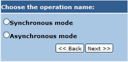

If the service to which the operation shall be added doesn't implement any of the interfaces of the Interface Repository the following page is shown:

Here the user is requested to select if the new operation shall be of type synchronous or asynchronous. Once this choice has been done and the "Next" button has been clicked the user is asked to enter scripts that implements the operation logic. The number of scripts requested depends by the type of the operation. A description of the number and type of the scripts can be found in the overview.
The next image gives an example in case of asynchronous operations.
Together with scripts, the user shall provide a name for the operation before finalizing the creation of the operation by clicking on "Create".